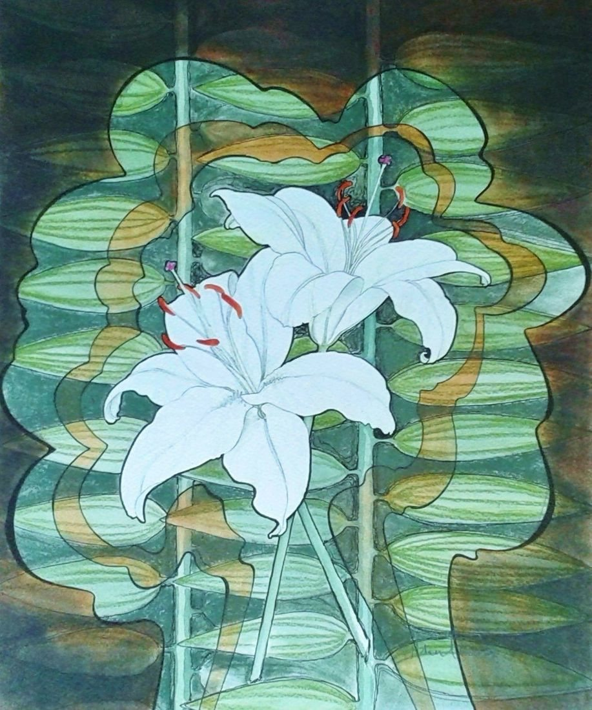

Design with White Lilies
No. 12- Medium
- Ink, pastel and watercolour on paper
- Size
- 39 × 29 cm
- Year
- 2025
- Price
- £120
This began as a study of white lilies, but my love of design moved the interest on to the shape behind the lilies, and then a shape was created within that shape. Apart from ink and watercolour, I used pastel over the top of the background, throwing the central image forward.
Ask about this paintingOr email enquiries@joanmullinsart.co.uk, quoting No. 12. UK only. Collection from Nantwich is free; UK postage is quoted when you enquire.
 The Pink Moon
The Pink Moon Shells and Seaweed
Shells and Seaweed The Garden
The Garden